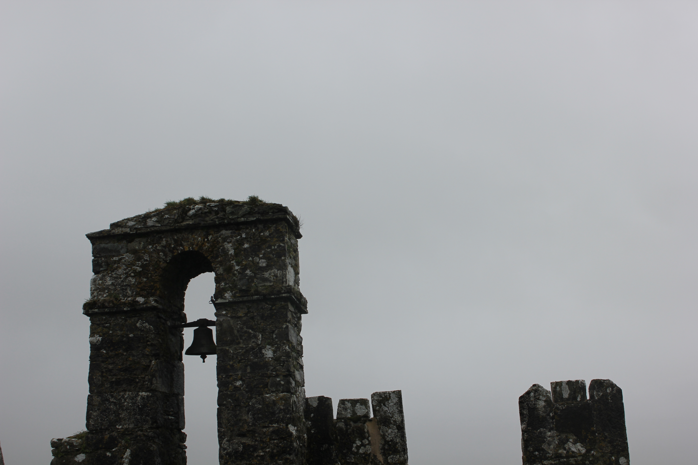
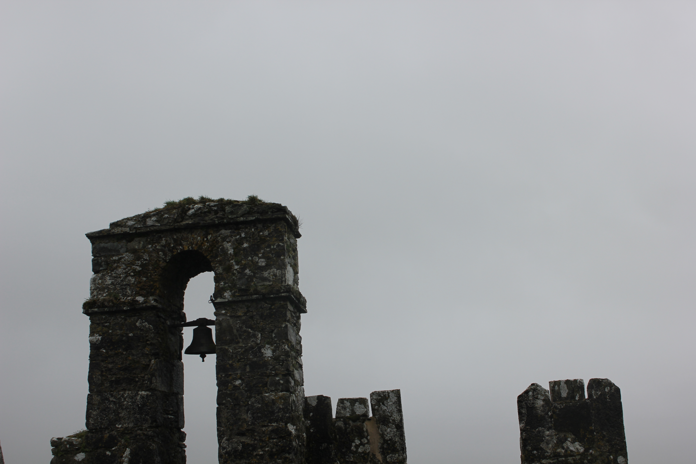

Asian hate has been prevalent in U.S. society since the first Asian immigrants landed on
U.S. soil. However, the discrimination faced and the history of Asian hate, events such
as the Chinese exclusion act and Japanese internment camps are not taught in schools, and
are rarely taught in U.S. schools. Not until the COVID-19 pandemic was Asian discrimination
more publicly broadcasted. Due to stereotypes, discrimination against Asians was not always
recognized as serious or as bad as other racial hate towards other minority groups. The goal
of this documentary is to show how the pandemic acted as a driving force for Asian American
protests, and how Fordham University members are creating different forms of community and
spaces for Asian students to celebrate, learn, and protect their identity and heritage. My
documentary partner Lauren Moon and I interviewed three different members of the Fordham
University community. The interviewees were chosen because they all work with programs to
help make space for the Asian American Community at Fordham. My documentary exhibits how
the individuals are positively impacting the Fordham community. My documentary helps shed
light on the racial inequality faced by the Asian American population.
 
